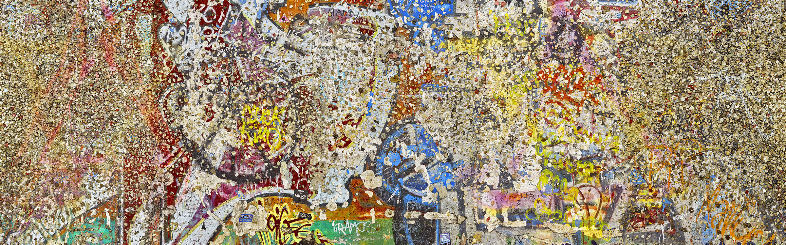
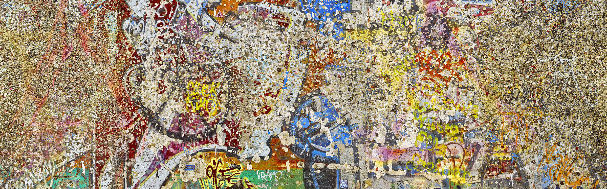

Artists
Steven Katzman
Steven Katzman is a self-taught photographer who has combined, over the years his long-time interest in political science with his photographic journey. Although he does not work from anyone’s theories on the appropriate direction for contemporary art, most of his photographs exemplify the post modernist notion that to be relevant to the final quarter of the 20th century, art needs to be political in nature. Katzman is, however, an artist, not a propagandist. Consequently, his images are not overtly political: the viewer must take time to think about each photograph to arrive at its ultimate message.
Like his forerunners, Jacob Riis, Lewis Hine, and Dorthea Lange, Katzman presents beautifully crafted, matter-of-fact images of his subjects, but his work goes beyond the parameters of photojournalism. The boxers, prisoners and cremation images deal in subtleties that are ultimately political. In later series he manipulated his subject matter to create metaphors. These photographs can be particularly disturbing, sometimes shocking. But Katzman’s goal is never to merely shock, rather, he wants the viewer to think about the image and answer these specific questions in his or her mind: Who is the person in the photograph? What is (or was, in the case of the death images) their life like? How do you feel about the issues being raised? Read more here.
You can gain further understanding of Steven Katzman's work by reading this document by the artisth titled "This Miserable Kingdom" here.


 
